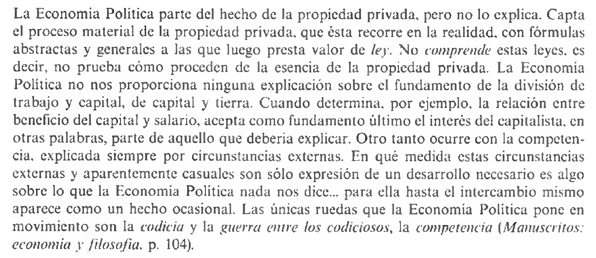
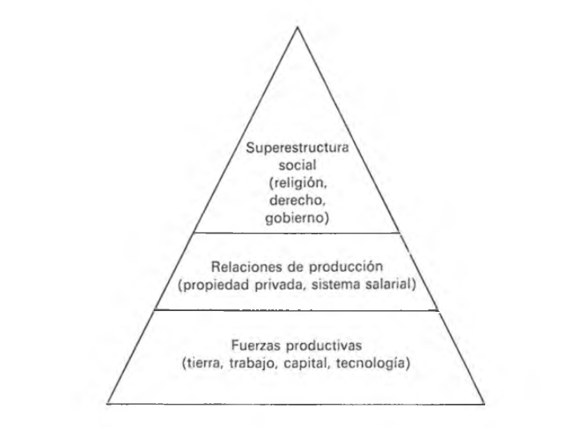
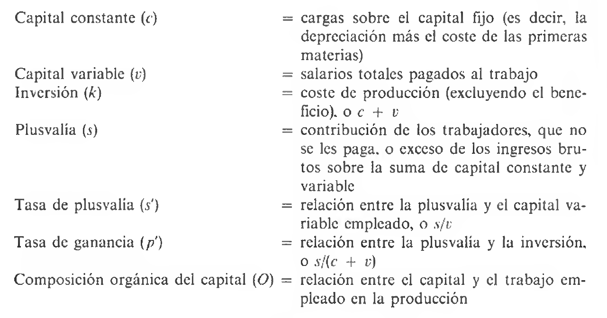
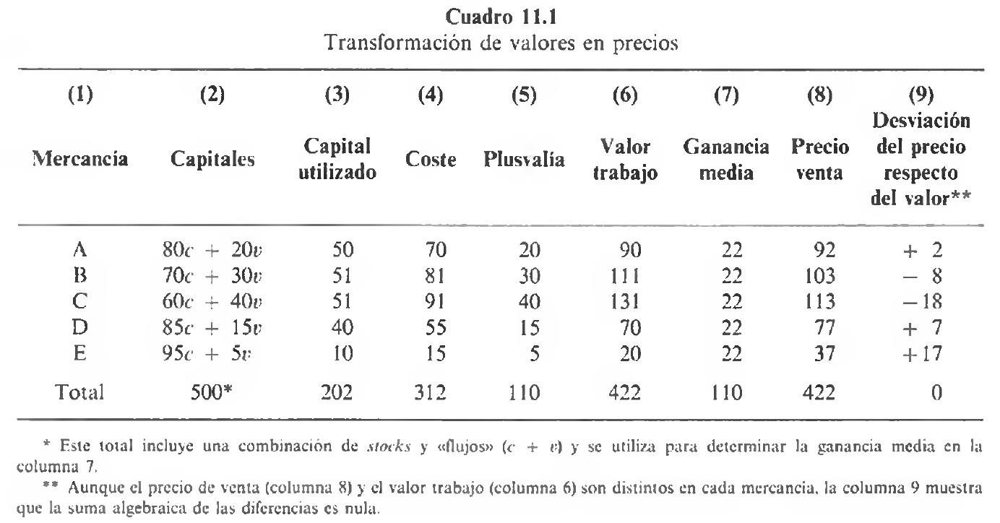

Historia del Pensamiento y del Análisis Económico
U5. La economía política. El pensamiento clásico II. Socialismo científico
La economía de Marx: introducción, nomenclatura y el rol de la fuerza de trabajo
Sistema de Marx y metodología
- El sistema de Marx es, como dijimos, una mezcla de análisis filosófico, sociológico-histórico y económico.
- Estando convencido de la inevitable caída del capitalismo aplicó su teoría de la historia a la sociedad de su epoca buscando descubrir las contradicciones entre las fuerzas productivas y las relaciones de producción que llevarían a la lucha de clases
Sistema de Marx y metodología (cont.)
Para Marx, la estructura institucional de una sociedad son las fuerzas de producción. Así con el molino manual la estructura institucional adecuada es el feudalismo. Del mismo modo, con el molino a vapor la estructura institucional adecuada es el capitalismo. La lógica del progreso tecnológico crea las condiciones y las fuerzas que permitan pasar del molino manual al molino a vapor. Y cuando cambian las fuerzas, las antiguas relaciones de producción deben dejar paso a formas institucionales más adecuadas.
Los primeros escritos económicos
- En sus Manuscritos… el tema central es que la historia es la saga de alienación que se produce en la vida de las personas, en tanto que productores, y que el comunismo, al que se llega a través de una revolución contra la propiedad privada, es la escapatoria a esa alienación
- En esos escritos sugiere la idea de que a pesar de que el trabajo es la fuente de toda riqueza, el trabajador sólo obtiene una pequeña parte de esa riqueza
- la parte del león de la riqueza va para el capitalista
- Basicamente postula que el capitalista se enriquece inevitablemente a costa del trabajador
Los primeros escritos económicos (cont.)
- Argumente que existe una tendencia hacia la concentración monopolística del capital en un númerco cada vez menor de personas
- esto aumenta los beneficios totales y aumenta la miseria de los trabajadores
- Tambien en estos escritos elabora una razonada crítica metodológica a la economía política
- critica el hecho de que los economistas clásico no explicaban (“comprendían”) las causas subyacentes del capitalismo
- Además crítica las contradicciones sociales reales que se observaban \(\longrightarrow\) “el trabajador se va haciendo cada vez más pobre cuanta más riqueza produce…se convierte en una mercancía cada vez más barata cuantas más mercancías crea”
Los primeros escritos económicos (cont.)
Figure 1: Crítica metodológica a la escuela clásica
Los primeros escritos económicos (cont.)
- Y sigue desarrollando esta idea cuando dice que los trabajadores se enfrentan en el proceso con los objetos de su trabajo (bienes) como con cosas exteriores a sí mismos, cosas sobre las que ya no ejercen ningún control ni propiedad
- cosas ajenas se han convertido en independiente de su productor
- Su crítica a la economía política era porque ocultaba la alienación inherente a la naturaleza del trabajo por no considerar la relación directa entre el trabajador y la producción
- esta idea es el sello distintivo de la economia marxista
Los primeros escritos económicos (cont.)
- Otras contribuciones las hizo en el marco de sus Grundrisse \(\longrightarrow\) discute por ejemplo las características de los sistemas pre-capitalistas y de las interrelaciones entre las partes del capitalismo (producción, distribución, cambio)
- Se opuso a una visión ahistórica de la producción (economía clásica) –intentó vincular el proceso de producción con la etapa de desarrollo de la sociedad
- Claramente se enfrentó con Mill acá (recuerde su distinción entre “leyes invariables” de la producción y “leyes variables” de la distribucion)
- para Marx toda forma de producción crea sus propias relaciones legales y formas de gobierno (“instituciones”)
Nomenclatura y elementos principales
- Las fuerzas productivas –dinámicas para Marx son fruto de la división del trabajo y son: tierra, trabajo, capital y tecnología.
- Cada una está en constante cambio (dinámica) tanto en cantidad como en calidad \(\longrightarrow\) esto es por cambios demográficos, tecnológicos, educación y demás
- Pero están sujetas a ciertas relaciones de producción –estáticas \(\longrightarrow\) son las que considera las reglas de juego capitalista y son de dos tipos:
- relaciones de propiedad
- relaciones humanas
Nomenclatura y elementos principales (cont.)
- Las relaciones de propiedad existen entre las personas y las cosas mientras que las relaciones humanas existen entre las personas
- La suma total de estas relaciones da pie a la estructura económica de la sociedad
- A su vez, sobre esta, se superpone una superestructura política y legal
- La suma total de estas relaciones da pie a la estructura económica de la sociedad
Estructura, superestructura y revolución
Figure 2: La “pirámide social” de Karl Marx
Diálectica y cambio
- Para Marx cambios continuos de la tecnología –el desarrollo de las fuerzas productivas- son un elemento dinámico y progresista que tensiona con el elemento estático y conservador que representan las relaciones de producción –i.e. conjunto de instituciones y costumbres en el que tiene lugar la actividad económica
- No había una dependencia mecánica de la superestructura institucional e ideológica respecto de la estructura económica
- más bien una relación compleja entendido más como un proceso dialéctico que como un proceso netamente causal
El proceso de cambio y revolución social
- Puede resumirse el esquema de la teoría de la sociedad de Marx
- A medida que la división del trabajo se profundiza, el trabajo se hace cada vez más fragmentado
- Conflictos de intereses cada vez más agudos via institución de propiedad privada –partición del capital acumulado entre diferentes propietarios, \(K\) y \(L\)
- Las fuerzas dinámicas de la producción entran en conflicto con las relaciones estáticas de la producción
- En el punto más álgido, se produce la lucha de clases y la revolución
- Se invierte la pirámide de la sociedad
Fuerzas productivas
- Marx reconocía que el desarrollo de las fuerzas productivas dependía de la mayor/menor división del trabajo –pero hasta ahí llegaban los acuerdos
- argumentó que había una conexión entre mayor división del trabajo y mayor conflicto de intereses
- Habla de las separaciones graduales: 1) entre trabajo industrial/comercial y trabajo agrícola (ciudad vs campo); 2) entre trabajo industrial y comercial; 3) entre trabajadores de cada clase/tipo de trabajo
El Estado para Marx
- El Estado aparece independiente de este conflicto –es un poder independiente divorciado de intereses individuales y comunitarios. Su lógica sería asi:
- Clases sociales por la división del trabajo promueven aparición del estado
- Cada clase que ocupa el poder busca promover su propio interés
- La comunidad ve este interés de clase como ajeno y que no controla
- La situación tensiona cuando se dan 2 (dos) condiciones
- grandes masas de la humanidad es desposeída de la propiedad al tiempo que existe un mundo de riquezas y culturas
- el desarrollo de las fuerzas productivas es universal –debe ocurrir en todos lados o la revolución y el comunismo serán fenómenos locales
La economía de Marx: la teoría del valor trabajo (TVT)
La naturaleza del capitalismo y la teoría del valor
- En el ideario de Marx, debía demostrar
- Como la mercancía de cambio en el mercado lleva a la lucha de clases
- Como el sistema de mercancías se “rompe” eventualmente por sus contradicciones internas
- Porqué el conflicto de clases en el capitalismo resultaría en la toma del poder por parte de la clase explotada –a diferencia de en todas las etapas anteriores
- El capitalismo para Marx era un sistema económico en que las personas vivían comprando y vendiendo mercancías
La naturaleza del capitalismo y la teoría del valor (cont.)
- Casi toda esta sección se desprende de contribuciones escritas en El Capital. Es aquí donde comienza a analizar la producción y distribución de mercancías y para ello parte de las TVT de Smith y Ricardo
- Marx identificó al trabajo como la esencia (causa) de todo valor \(\longrightarrow\) el valor era una propiedad objetiva de todas las mercancías
- ni por asomo Marx daba crédito a fuentes subjetivas del valor –era un materialista y sólo las relaciones materiales determinaban el valor
- Pero el valor se determina antes del precio
La naturaleza del capitalismo y la teoría del valor (cont.)
- Marx percibió y atacó la aparente contradicción entre las dos TVT de los clásicos: 1) precio de mercado (CP) y 2) precio natural (LP) por cuanto observaba que los precios de mercado fluctúan continuamente
- Reconocía que en condiciones de competencia, los precios no fluctúan aleatoriamente sino que lo hacen en torno a un punto definido \(\longrightarrow\) este punto es para Marx el verdadero costo de producción, es decir, el costo del trabajo – en otras palabras, para Marx el valor venía determinado no por las leyes del mercado sino por la producción
La naturaleza del capitalismo y la teoría del valor (cont.)
Algunos “traductores” de Marx sugieren que el “resolvía” este contraste de la siguiente forma. Los precios de mercado son estimaciones ideales de las relaciones de intercambio entre \(O\) y \(D\). Y la competencia exige que estas estimaciones ideales se conformen a la realidad material del trabajo incurrido en la producción. El materialismo de Marx requiere que la causalidad sea de la relación de intercambio objetiva a la valoración ideal. En última instancia, lo que realmente importaba era las relaciones de intercambio objetivas
Trabajo y fuerza de trabajo
- Distinguió entre trabajo -ejercicio en la práctica real de alguna actividad productiva- y fuerza de trabajo -trabajador como persona que incorpora el potencial para ejercitar una actividad productiva
- paralelo \(\longrightarrow\) calor y fuerza de calor (carbón). El carbón es una mercancía que se compra y se vende en el mercado al precio que cubra sus costos de producción. El comprador utiliza el carbón para obtener calor –pero podría usarla de cualquier otra forma.
- Una vez adquirida, la mercancía pertenece al comprador
Trabajo y fuerza de trabajo (cont.)
Trabajo y fuerza de trabajo. La mercancía vendida por el trabajador es la fuerza de trabajo (capacidad de trabajo); el capitalista paga por ella su valor (lo suficiente para cubrir los costos de producción de la fuerza de trabajo –i.e. medios de subsistencia para mantener vivo al trabajador y su familia). El capitalista adquiere el derecho de utilizarlo en el proceso productivo para obtener de él un número dado de horas diarias de trabajo. Dada la extensión de un una jornada laboral, el número de horas de trabajo que el capitalista “extraería” del trabajador sería mayor al valor de la fuerza de trabajo –i.e. número de horas de trabajo “contenido” en los medios de subsistencia
Trabajo necesario y trabajo excedente
- Si hay un excedente, la cantidad de trabajo diario que proporcionan los trabajadores es mayor que la cantidad de trabajo requerida para producir sus medios diarios de subsistencia. Marx distinguió:
- Trabajo (socialmente) necesario \(\longrightarrow\) es el que se requiere para producir los medios de subsistencia de todos los trabajadores en la economía [salario/valor de cambio del trabajo]
- Trabajo excedente \(\longrightarrow\) es el resto del trabajo realizado en la jornada diaria [plusvalía]
- El trabajo excedente es pues igual a la diferencia entre el trabajo social total y el trabajo necesario
Producción y plusvalía
- Aquí un famoso pasaje sobre la aparición de la plusvalía
Si fuera necesaria una jornada de trabajo para mantener vivo durante una jornada de trabajo a un obrero, el capital no existiría, porque la jornada de trabajo se intercambiaría por su propio producto, y de esta suerte el capital como capital no se podría valorizar ni, por consiguiente, conservar…Por el contrario, si, pongamos por caso, sólo se necesita media jornada de trabajo para mantener vivo a un obrero durante toda una jornada laboral, la plusvalía del producto surge de por sí… [Karl Marx, Elementos fundamentales para la crítica de la economía política]
El origen de la plusvalía
- Dijimos antes que el trabajo (fuerza de trabajo) es una mercancía –valor de cambio de la mercancía fuerza de trabajo
- La fuerza de trabajo es el trabajador mismo en un sentido estricto
- Dado que la fuerza de trabajo es una mercancía, debe tener un valor como cualquier otra \(\longrightarrow\) ¿cómo se determina el valor?
- el valor de la fuerza de trabajo se reduce al valor de una cantidad más o menos precisa de mercancías ordinarias
El origen de la plusvalía (cont.)
El valor de la fuerza de trabajo se determina, como en el caso de cualquier otra mercancía, por el tiempo de trabajo necesario para la producción, y, en consecuencia, también para la reproducción de este artículo especial…Dado el individuo, la producción de fuerza de trabajo consiste en la reproducción de sí mismo o su manutención. Porc consiguiente el tiempo de trabajo requerido para la producción de fuerza de trabajo se reduce al necesario para la producción de los medios de subsistencia; en otras palabras, el valor de la fuerza de trabajo es el valor de los medios de subsistencia necesarios para el mantenimiento del trabajador…Sus medios de susbistencia deben…ser suficientes para mantenerlo en su estado normal como individuo laborante…. [Mark, Karl, El Capital, Tomo I, pp. 189-190]
El origen de la plusvalía (cont.)
- ¿Cómo es posible que el capitalista a través del proceso de comprar-producir-vender llegue con \(D\) y se retire con \(D'\) comprando y vendiendo siempre a los valores de equilibrio?
- en otras palabras, ¿cómo es posible que se cree valor (plusvalía)?
- Plusvalía no puede surgir del proceso de circulación de mercancías \(\longrightarrow\) supongamos que todos suben los precios 10%, entonces lo que vendo a un 10% mas, lo termino pagando en forma de insumos a un 10% mas –inflación
- Plusvalía no puede surgir a partir de materiales y/o máquinas que entran en el proceso productivo \(\longrightarrow\) materiales y máquinas pasan su valor al producto final pero no aumentan su valor entre ambas puntas del proceso
El origen de la plusvalía (cont.)
- Plusvalía sólo puede surgir a partir de la fuerza de trabajo. Veamos
- Capitalista compra la fuerza de trabajo por su valor –salario igual al valor de los medios de subsistencia [i.e. suponga igual a \(6 horas\)]
- Luego de esas 6 horas el trabajador ha añadido ese equivalente al valor de la mercancía (más las horas de trabajao contenidas en materiales y maquinaria)
- Si la jornada de trabajo fuera de 12 horas, durante las ultimas 6 horas el obrero continúa agregando valor pero es un valor en exceso del necesario para compensar sus medios de subsistencia
- En resumen es una plusvalía que el capitalista toma para si
El origen de la plusvalía (cont.)
Todas las condiciones del problema se cumplen, en tanto que las leyes que regulan el cambio de mercancías no han sido en ninguna forma violadas. Pues el capitalista como comprador pagó por cada mercancía, por el algodón, por el huso y por la fuerza de trabajo, su valor completo. Vende su hilaza…en su valor exacto. Sin embargo, retira…de la circulación más de lo que originalmente lanzó a ella [Mark, Karl, El Capital, Tomo I, pp. 217]
El origen de la plusvalía (cont.)
- Con el trabajo de 1 (un) día, el trabajador produce más que los medios de susbsistencia de un día
- La jornada de trabajo puede pues dividirse en 2 (dos)
- trabajo necesario \(\longrightarrow\) producto de este trabajo va al trabajador como salario
- trabajo excedente \(\longrightarrow\) producto de este trabaja va para el capitalista como plusvalía
- El trabajo necesario y el trabajo excedente surgen en toda sociedad que en que la productividad del trabajo humano se ha elevado por encima de cierto mínimo muy bajo -i.e. todas excepto las más primitivas
El origen de la plusvalía (cont.)
Lo específico del capitalismo no es el hecho de la explotación de una parte de la población por otra, sino la forma que adopta esta explotación, es decir, la producción de plusvalía
Salarios, plusvalía y capital
- Marx enfrentó las mismas 2 (dos) preguntas que Ricardo:
- ¿Cuál es el valor de cambio del trabajo? \(\longrightarrow\) teoría de los salarios
- ¿Cómo se determina el valor de los bienes producidos por la maquinaria? \(\longrightarrow\) teoría del capital
- En esto Marx fue claro \(\longrightarrow\) “el capitalismo no podría existir si el trabajador no produjese un valor mayor que el requerido por su propia subsistencia”
Salarios, plusvalía y capital (cont.)
- Punto importante \(\longrightarrow\) plusvalía no surge en el intercambio sino en la producción
- por esta razón Marx argumenta que la finalidad de la producción en el sistema capitalista es extraer plusvalía del trabajador [explotación del trabajo por el capital]
- La plusvalía surge no porque el trabajador reciba menos de lo que vale sino porque produce más de lo que vale
- dado que este trabajo excedente es expropiado de manos del trabajador, puede definirse a la plusvalía como la suma de renta, interés y beneficio –es decir pagos que no van al factor trabajo
- Marx consideraba que este principio era su contribución más importante
Salarios, plusvalía y capital (cont.)
Ilustración de cálculo de valor trabajo. Marx añadía todo el trabajo directo e indirecto usado. El valor de un bien que requería 12 horas de trabajo directo más materias primas cuya producción insumió 12 horas de trabajo mas 1/1000 de la vida de una máquina cuya producción insumió 5000 horas de trabajo sumaría en total unas 27 horas de trabajo, entre trabajo, insumos y depreciación del \(K\). ¿Cómo genera beneficio el capitalista si tiene que vender el bien a su valor de 29? Sólo pagandole a al menos uno de los factores a un precio por debajo de su valor. Dado que compra máquinas e insumos de otros capitalistas, la ganancia debe venir de los trabajajores
Salarios, plusvalía y capital (cont.)
- ¿Y el valor del trabajo?
Para Marx, el trabajo era diferente. Si el valor de un bien es la cantidad de trabajo que insumió producirlo, debemos preguntarnos ¿cuál es el valor del trabajo? El valor del trabajo es la cantidad de trabajo que insume producir la comida y subsistencia del trabajador y su familia. Y desde que los humanos inventaron la agricultura, el \(L\) ha producido un excedente social –más de lo que es necesario para su subsistencia. En el ejemplo, si el trabajador consume bienes y servicios cuya producción insumió 6 horas, el valor de su trabajo es el equivalente en dinero de esas 6 horas. Y eso es precisamente lo que le paga el “perfecto capitalista”. Lo que deja al capitalista con un beneficio o plusvalía, del equivalente en dinero a 6 horas de trabajo
Salarios, plusvalía y capital (cont.)
- ¿Por qué el trabajador no podría simplemente trabajar por sí mismo y quedarse con el equivalente a 12 hs. de trabajo que son necesarias para producir el bien?
- la respuesta de Marx es porque el valor de un bien en el mercado se basa en los componentes del valor (ver luego)
- En otras palabras, si el trabajador pudiera producir el bien sin la maquinaria avanzada y demas insumos, pero le requeriría 50 horas, sólo lo podría vender por el equivalente a 29 horas de trabajo
- el capitalista puede apropiarse de la plusvalía y explotar al trabajador por la simple razón de que es dueño de la maquinaria que permite que el excedente social sea tan grande como es!
Salarios, plusvalía y capital (cont.)
- Ricardo
- trabajo como medida del valor
- trabajo no única causa del valor
- Marx
- trabajo como medida y causa (única) del valor
- sólo trabajo (no las máquinas) puede producir plusvalía
- ¿Valor de cambio de la maquinaria? \(\longrightarrow\) la máquina es vista como trabajo cristalizado y por tanto igual al costo del trabajo que las produjo
- Obviamente Marx ignoró la crítica (válida) de que esto negaba que las máquinas fueran productivas per se y deben valorarse por encima del costo de trabajo invertido en ellas
Los componentes del valor
- El valor de toda mercancía producida en la economía capitalista puede divirse en 3 (tres) partes
- Valor de materiales y maquinaria usados \(\longrightarrow\) capital constante, \(c\)
- Valor de la fuerza de trabajo \(\longrightarrow\) capital variable, \(v\)
- Excedente producido por la fuerza de trabajo \(\longrightarrow\) plusvalía, \(p\) \[\begin{equation} c+v+p=valor \quad total \end{equation}\]
Los componentes del valor (cont.)
- Un comentarios relevante
- Esta fórmula refleja en mayor o menor medida (aunque simplificada) los balances de las empresas modernas –valor total equivale a ventas brutas; \(c\) es materiales/insumos mas depreciacion; \(v\) son sueldos y salarios; y \(p\) ingreso disponible para distribuir como intereses/dividendos/beneficio (o reinvertir
Los componentes del valor (cont.)
- Define la tasa de plusvalía como la proporción de plusvalía respecto al capital variable \[\begin{equation} \frac{p}{v}=p' \end{equation}\]
- Con el ejemplo anterior de jornada de 12 (doce) horas, la tasa de plusvalía es igual a 100%
- Puede ser expresada en horas de trabajo como en valores –sólo hace falta valorizar monetariamente el producido de una hora de trabajo.
- La tasa de plusvalía depende de 3 factores: a) duración de jornada;
- cantidad de mercancías que entran en el salario real; c) productividad del trabajo
Los componentes del valor (cont.)
- La tasa de plusvalía aumenta:
- con un aumento en la duración de la jornada de trabajo
- con una disminución del salario real
- con un aumento en la productividad del trabajo
- Marx frecuentemente suponía que la tasa de plusvalía era igual en todas las ramas de la industria y en todas las empresas hacia adentro de cada industria
- decía que la movilidad del trabajo iba a eliminar diferencias significativas de tasas de plusvalía
Los componentes del valor (cont.)
- También define la composición orgánica del capital como la proporción entre el capital constante y el capital total: \[\begin{equation} \frac{c}{c+v}=o \end{equation}\]
- La COK no es otra cosa que una medida de la amplitud/extensión en que el trabajo es provisto de maquinas e insumos en el proceso productivo
Los componentes del valor (cont.)
- Finalmente define la tasa de ganancia como la proporción de plusvalía con respecto al desembolso total del capital: \[\begin{equation} \frac{p}{c+v}=g \end{equation}\]
- Estrictamente esto muestra la tasa de ganancia (rentabilidad) sobre el capital realmente empleado en la producción de una mercancía
- note aquí que capital realmente empleado (durante un año) no es lo mismo que inversión total (durante un período más largo)
Los componentes del valor (cont.)
- Recordando que \(p'=\frac{p}{v}\), \(o=\frac{c}{c+v}\) y \(g=\frac{p}{c+v}\) se sigue que: \[\begin{equation} g=p'(1-o) \end{equation}\]
- Esto es, la tasa de ganancia, como la variable más importante a mirar por el capitalista, depende en forma clave de las dos variables más fundamental del análisis marxista, la tasa de plusvalía y la composición orgánica del capital
- También supuso que la tasa de ganancia era uniforme a nivel de industria y de empresas –por movilidad tanto de \(L\) como de \(K\) [suponía técnicas iguales en todos lados]
Los componentes del valor (cont.)
El problema de la transformación. Si la tasa de plusvalía y la tasa de ganancia son iguales en todos lados, si el cambio de las mercancias debe hacerse de acuerdo a la ley del valor, entonces se sigue que la COK debe ser igual en todos lados. Si el valor de la mercancía A se forma \(10c+20v+20p=50\) y el valor de la mercancía B se forma \(30c+10v+10p=50\), en ambos casos la tasa de plusvalía es la misma (100%) y ambos bienes deberían cambiarse 1 a 1. Pero si ocurre esto, el capitalista de A tendría una \(g=66,66%\) y el capitalista de B una \(g=25%\). Esto no sería sostenible ni estable. Tampoco son iguales las COK.
- En los dos primeros volúmenes de El Capital ignoró diferencias en la COK (no existían para el); en el tercer volumen “se retracta” y ofrece como respuesta el problema de la transformación
La economía de Marx: la gran contradicción y el problema de la transformación
La gran contradicción
- ¿Cómo concilia la TVT de Marx el hecho de que en competencia la tasa de beneficios debía ser uniforme y que a su vez según su teoría distintas relaciones \(K/L\) entre industrias darían distintas tasas de beneficios?
- esto era algo que empíricamente no se observaba –y si se observaba diferentes relaciones \(K/L\).
- Lo que sucedía era que el precio de mercado de las mercancías discrepaban frecuentemente de sus valores trabajo (para cumplir con la tasa de beneficio uniforme)
- no puede ser cierto que el valor se determine sólo por los pagos efectuados al \(L\)
La gran contradicción (cont.)
- La respuesta de Marx es que esto se debía a la teoría de la competencia de los capitales –competencia entre empresas e industrias llevaba a una tasa uniforme de beneficios
- Cuando esta tasa media se añade a los (diferentes) costos de producció de las diferentes industrias, desaparecen las desviaciones individuales de los precios de mercado respecto de los valores de trabajo [desaparecen en sentido agregado, que se compensan]
La gran contradicción (cont.)
Figure 3: Nomenclatura y definiciones en Marx
La gran contradicción (cont.)
- En función de estos conceptos, y en terminos modernos, diríamos que
\[\begin{align} PNB&=c+v+s \\ PNN&=v+s \end{align}\]
- Su intento por resolver “la gran contradicción” dio lugar al famoso problema de la transformación que es uno de los aspectos técnicos más discutidos de la teoría de Marx
La gran contradicción (cont.)
- Supuestos:
- Diferentes mercancías se producen con diferentes composiciones orgánicas del K (COK), \(K/L\) y además utilizan capital constante en diferentes proporciones en la producción
- Tasa de plusvalía del 100%
- Competencia tiende a igualar la tasa de beneficio entre industrias a la tasa media, es decir, al ratio de plusvalía agregada sobre inversión agregada
- Diferentes mercancías se producen con diferentes composiciones orgánicas del K (COK), \(K/L\) y además utilizan capital constante en diferentes proporciones en la producción
- El estimaba que la COK dependía de relaciones técnicas entre fuerza de trabajo y otros medios de producción
La gran contradicción (cont.)
Figure 4: El problema de la transformación
La gran contradicción (cont.)
- Cinco mercancías cada una con diferente COK –\(A\) usa 80 \(c\) y 20 \(v\) –hacemos equivaler unidades con valores monetarios. Cada industria tiene una inversión total, \(k\), igual a 100 y la inversión agregada igual a 500
- Costo de cada mercancía es la suma del capital utilizado (columa 3) y \(v\) –está dado en la columna 4 [note que no hay factor tierra en el ejemplo]
- La plusvalía es dada en la columna 5 -y recuerde que era 100% de \(v\); lo importante es que la columna 6 revela el “verdadero valor de costo” según la TVT de Marx (la suma de columna 4 y 5)
La gran contradicción (cont.)
- Según Marx, el verdadero coste de la mercancía se diferencia del precio de venta en la cantidad media de ganancia –dada en columna 7.
- esta gcia. media es uniforme en todas las industrias y sale de dividir plusvalía sobre inversión, es decir, \(\frac{s}{c+v}\) lo que queda \(110/500=0.22\) en este ejemplo
- La ganancia media (ya no como tasa sino aplicada a la inversión) se suma al costo y determina simultáneamete el precio de venta y las desviaciones respecto del valor trabajo
- “Las desviaciones del precio se anulan mutuamente mediante una distribución uniforme de la plusvalía o por el agregado de la ganancia media de 22 por cada 100 de capital adelantado a los respectivos precios de costo de las mercancias”
La gran contradicción (cont.)
- Este fue el famoso problema de la transformación de valores en precios apoya el arguemnto de Marx de que en el agregado el trabajo es la verdadera fuente del valor
- Esta elegante e ingeniosa salida demuestra con creces la brillante capacidad analítica de Marx para tratar con razonamientos lógicos y deductivos
- Por muy ingenioso que sea el argumento, no obstante, esta solución sigue negando que la maquinaria sea productiva
- a pesar de ello, y de que Marx no le dio tanta importancia al problema de la transformación, fue retomado con pasión y ahínco por los economistas neoclásicos mucho más que por los neo-marxistas!
Las leyes del movimiento capitalista y el fin del capitalismo
La evolución del capitalismo
- Una separación importante de Marx con la economía clásica fue el rol que asignó a la tecnología –para él, era la fuerza motriz principal de la dinámica social
- Tanto Smith como Ricardo escribieron en una época en que no les resultaba facil y/o evidente comprender e incorporar el progreso tecnológico como parte de su teoría
- Marx en cambio le atribuyó un rol central
- Escribió y desarrolló 5 (cinco) leyes –tendencias generales- inherentes al capitalismo
- Según Marx cada una brota de la naturaleza dinámica de la economía y surge a partir del conflicto entre fuerzas productivas y relaciones de producción
La ley de la acumulación y la tasa decreciente de ganancia
- En el capitalismo todos los empresarios intentan obtener más plusvalía para aumentar el beneficio y como esta proviene del trabajo
- sería esperable ver más métodos intensivos en \(L\) pero Marx observó que lo contrario sucedía
- Había una lógica \(\longrightarrow\) la maquinaria abarata el precio de la mercancía y reducir por tanto la parte de la jornada laboral que el obrero necesita para sí por tanto aumentando el resto de la jornada de trabajo –la que cede al capialista
- así el capitalista va sustituyendo \(L\) por \(K\) y los que primero lo hagan venderán a un precio de mercado con costos mas bajos
La ley de la acumulación y la tasa decreciente de ganancia (cont.)
- Pero si todos los capitalistas lo hacen entonces aumenta la composición orgánica del capital, \(O\) por lo que disminuye la plusvalía, \(s\) y la tasa de ganancia, \(p'\)
- También dio otra razón \(\longrightarrow\) trabajadores presión por tasas salariales más altas. Esto eleva los costos de producción pero los precios determinados aún por trabajo socialmente necesario
- Como Marx no era malthusiano, veía que salario más altos podían ser estables y permanentes
La ley de la concentración creciente y de la centralización de la industria
- La ley anterior lleva a una concentración cada vez mayor del \(K\) via sustitución de \(L\) por \(K\) y transform la industria \(\longrightarrow\) de pequeña a gran escala –más división del trabajo y más producción
- Creía en la aparición de sobreproducción general que terminaría en una reducción de precios –sólo más eficientes sobrevivirían
- peces grandes “comen” a peces chicos y se refueza tendencia a concentración
La ley del creciente ejército industrial de reserva
- Para Marx, la dinámica que acompaña a la innovación tecnológica y la sustitución de \(L\) por \(K\) hace inevitable el desempleo
- Este desplazamiento de trabajadores da origen a un creciente ejército industrial de desempleados (reserva)
- este desempleo es de 2 (dos) tipos
- desempleo tecnológico (por sustitución de \(L\) por \(K\))
- desempleo cíclico (por crisis de exceso de producción)
- este desempleo es de 2 (dos) tipos
La ley de la miseria creciente del proletariado
- El crecimiento del ejército industrial de reserva se acompaña por una miseria creciente del proletariado –a esto se suma que los capitalistas intentan contrarrestar la tasa decreciente de ganancia con un menor salario, mas horas de trabajo y peores condiciones
- Marx veía inevitable la incorporación de mujeres y niños a la fuerza de trabajo
- “el trabajador se convierte en un comerciante de esclavos”
- Esto conduce a mayores tasas de mortalidad infantil y a la degradación moral de mujeres y niños
La ley de la miseria creciente del proletariado
- La máquina se convierte para Marx en el instrumento más poderoso para reducir el tiempo de trabajo para producir un bien \(\longrightarrow\) empresarios buscan reducir al máximo tiempo ocioso de la máquina
- Dificil contrastar esto con algunas evidencias empíricas –tal vez su predicción más errónea
La ley de la miseria creciente del proletariado (cont.)

Figure 5: Nomenclatura y definiciones en Marx
La ley de la miseria creciente del proletariado (cont.)

Figure 6: Nomenclatura y definiciones en Marx
La ley de las crisis y depresiones
- Explicó en forma moderna la vinculación entre los ciclos económicos (crisis) e inversión \(\longrightarrow\) notó que empresarios invertían más cuando el salario era bajo y desempleo alto (y menos maquinaria)
- esto producía crisis periódicas
- Su teoría de las crisis era parte de su explicación general \(\longrightarrow\) debía demostrar que el capitalismo sufriría cada vez más y más graves crisis
- Tendencia a acumulación \(\longrightarrow\) sobreproducción \(\longrightarrow\) mayor desempleo \(\longrightarrow\) miseria creciente
- eventualmente todo lleva al exceso de producción del capital
La ley de las crisis y depresiones (cont.)
- La tasa media decreciente de ganancia señala la inminente crisis
- Gravedad de las crisis dada por la cantidad de personas que afectan; cada vez mas y de mayor duración
- tendencia a la depresión permanente porque el ejercito industrial de reserva aumentaría con cada crisis
- La consecuencia lógica e inevitable de todo esto es la revolución social a través de la cual el proletariado se alza, se libera de sus cadenas y se apodera de los medios de producción